01ESACA
since 2026
AI coding agents are fast — and they read code, run commands and send data wherever they like. ESACA lets regulated organisations use them anyway: inside their own data centre, under their own rules.
- Organisation
- mgm × Fsas Technologies
- Runs
- on-prem · air-gapped
- Models
- model-independent
-
The problem
Banks, utilities, public authorities and defence suppliers face the same dilemma. Agentic coding promises large productivity gains, but a cloud-based agent can send source code and secrets to a foreign provider, delete data or pull in a malicious extension — and it ties the organisation to one vendor’s model, prices and roadmap. Banning the tools only pushes teams into shadow IT, where nobody measures what the agents actually deliver.
-
The idea
ESACA — the European Sovereign Agentic Coding Appliance — is a standardised system that brings coding agents into the organisation’s own perimeter: on-premises or fully air-gapped, with no data egress, no external API calls and no hidden telemetry. It is model-independent and favours sovereign models running on the customer’s own hardware. ESACA is an initiative of mgm technology partners and Fsas Technologies, a Fujitsu company. In the terms of my article on AI-driven software engineering, it is a harness for coding agents.
-
The building blocks
- Sandbox — the agent and the project run in one container, all outbound traffic goes through a second one. Access is deny-by-default, the agent only sees placeholder credentials, real secrets are injected on the way out, every decision is logged.
- Configuration — one versionable file describes the whole environment: access rules, agents, skills, plugins, tools and versions.
- Hub — proven configurations are shared and reused across projects.
- Benchmark — measures the complete system (agent + model + hardware) on the organisation’s own repositories, keeping hard metrics such as builds and tests apart from LLM-as-judge scores.
- Workbench — a guided path from ticket to plan to agents in isolated workspaces, ending in a mandatory human review before the normal merge process.
-
Who it is for
Critical infrastructure and utilities, the public sector, and regulated industries such as defence, legal and healthcare — organisations that work under NIS-2, BaFin, ISO 27001 and GDPR. The adoption path goes step by step, from assistants to agents, multi-agent workflows and finally AI-native development, with people staying in the decision seat.